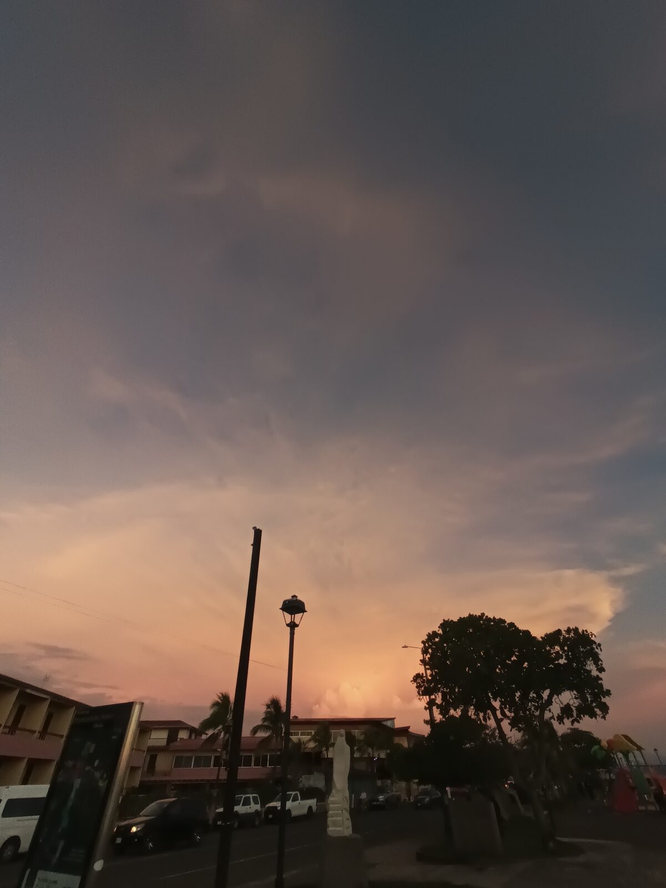

Sonnenuntergänge und gutes Essen
Heute bin ich wirklich früh aufgestanden (früh für meine Verhältnisse, ihr wisst ja HAHAHA), weil wir in den Parque Marino del Pacífico wollten, der nicht nur ein schönes Aquarium ist, sondern auch ein Rehabilitationszentrum für Wildtiere. Ich hatte ihr Instagram gesehen – wunderschön!
Wir kamen an und ... GESCHLOSSEN. Montags haben sie zu HAHAHAHA.


Also gingen wir essen und arbeiten. Ich baue gerade die Challenge für BioReto, einen Hackathon hier in Costa Rica: ein simulierter Bakterien-Inkubator, in dem jedes Team seine Kolonie wachsen lassen muss. Wen es interessiert: Alles steht auf bioreto.hazloahora.org. Und tja, da war mein Nachmittag weg.


🐱🐱🐱🐱 Mittagessen: 4 von 5 Adas. Sehr lecker, aber sehr teuer.
Als ich endlich vom Laptop aufsah, schenkte uns Puntarenas das hier:



Nach diesen Sonnenuntergängen trafen wir uns zum Abendessen mit meinem Freund Aaron, Professor für Systemtechnik an der UCR. Wir gingen wieder ins El Chicharrón del Coco, weil sich die Tacos von gestern eine Revanche verdient hatten.

Was passiert mit der Bildung im Zeitalter der KI?
Wir sprachen darüber, wie er den Wandel zur KI erlebt, und er sagte ziemlich besorgt:
„Mann, ich gebe keine Hausaufgaben mehr auf, weil sie alles mit KI machen.“
Dass sie sie benutzen, findet er in Ordnung; im Job werden sie das sowieso tun. Was ihn beunruhigt: Sie verstehen nicht, warum das, was dahintersteckt, wichtig ist. Er erzählte, er bekomme Projekte, in denen alles funktioniert, aber wenn er die Jungs fragt „Was macht das hier?“ oder „Schreibt mir mal einen Filter für diese Abfrage“, können sie es nicht. Und das enttäuscht am Ende.
Deshalb richtet er seinen Unterricht jetzt auf Praxis aus: verstehen, wie man etwas baut, wie es herauskommt und warum. Und einer seiner Studenten fragte ihn ganz entspannt: „Und wozu soll ich lernen?“ HAHAHAHA.
Das alles erinnerte mich an die Klagen meiner Freunde, die an der Uni lehren, und an meine eigene Krise Anfang dieses Jahres 2026. Als ich anfing, KI zu nutzen, hat es mich umgehauen, und ich dachte: Wozu noch Kurse, Workshops und Vorträge geben, wenn alles nur einen Prompt entfernt ist und sie es besser und mit unendlicher Geduld erklärt? Das kann doch jeder.
Aber es gibt etwas, das „facilución“ heißt, ein Begriff aus dem Umfeld hochbegabter Menschen: Wir glauben, dass alles leicht ist. Was NICHT STIMMT, aber wir glauben es HAHAHA. Also habe ich alles auf die Probe gestellt und viele Kollegen gefragt, und es zeigt sich: Jeder lehrt und engagiert sich auf seine eigene Art. Ich habe sogar von Leuten gehört, die es tun, um sich geliebt zu fühlen, und von anderen, die sich wichtig fühlen wollen, reines Ego, was auch legitim ist.
Diese Krise hat mich gelehrt, dass beim Lehren und Lernen vor allem die Gefühle zählen. Claude und ChatGPT können alle Informationen der Welt haben, aber ohne Emotionen dahinter gibt es kein Lernen. Was zählt, ist die menschliche Begegnung: Wenn Menschen beteiligt sind, inspiriert das, und das kann die Zukunft von jemandem prägen. So bin ich aus der Krise herausgekommen.
Deshalb meine Frage an euch: Welche Lehrerin oder welcher Lehrer hat euch etwas beigebracht, das euch kein Prompt hätte beibringen können?
👆 Tippe oder klicke auf einen Punkt der Karte, um das Kapitel dieses Tages zu lesen.